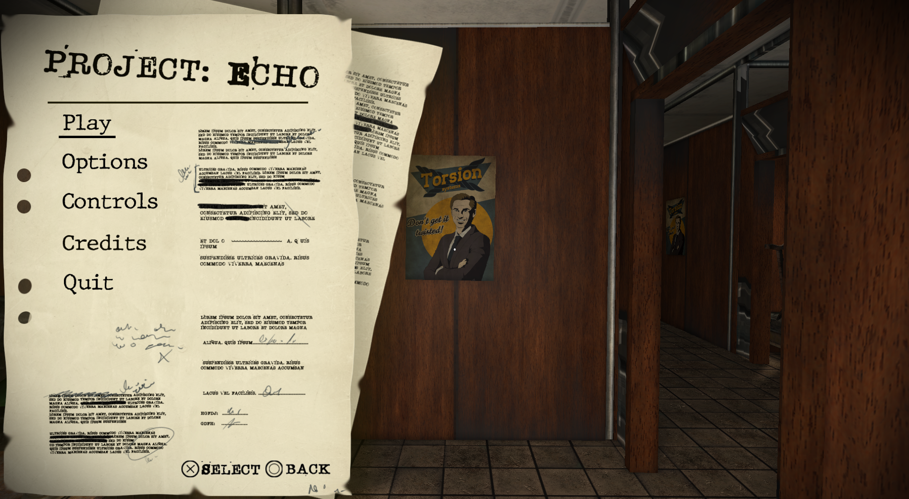
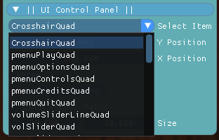

Project Echo
How do I work on 2D stuff in an engine that was built for 3D?

Overview
You play as a curious explorer named Josie, who together with her friend Marv, are investigating some old abandoned offices of a secretive company called Torsion Systems. From there, you discover an enormous tunnel hiding underground, as well as a strange alien artefact that gives you the incredible power to move and rotate huge pieces of this gigantic structure. Using your new ability, you can make a path forward through its complex innards, allowing you to dive deeper and deeper into this awe-inspiring and mysterious place.
Visit Itch.io page!Technical Breakdown
For this game project I gave myself the task to create a pause menu for the game. I gave myself this task as at the time of making the game I felt very insecure about the engine and my capabilities of working in it. This was a big step up from working in your regular Unity or Unreal project and I wasn't sure if I was ready for that. After I started working on the pause menu I found myself understanding it more than I ever had before. I understood how to utilize different header files and getting info between the different scripts.

But understanding the engine and the language wasn't the only challenge. I had to work with 2D elements in an engine who's main purpose is 3D games. Luckily I had found out about the system I would be using a few weeks prior to the actual game projects starting. For the UI I got to use Quads which fortunately the engine was able to provide for us. It was a bit of a risk of using this code as it was quite old and wasn't that focused on because of the engine not really being made for that.
UI Tool for Designers and Artists
In this game project I created a tool that could be used by our team members to position UI elements on the screen. When you ran the program the tool would go through all quads in the game and put them in a list that would then be turned into the drop-down menu shown below.

Crosshair
I did some work on the crosshair as well as that's often included in the basics of a games UI assets. It takes whatever color we give the selection shader on the map layout and applies it to the crosshair.

What I Learned
This was our first real game project and despite being hesitant at first about doing a game project in an engine I knew next to nothing about I still feel like it turned out good. It also helped me understand this whole new language to me and that helped me in our regular courses as well. Now I feel ready to work in any c++ engine!